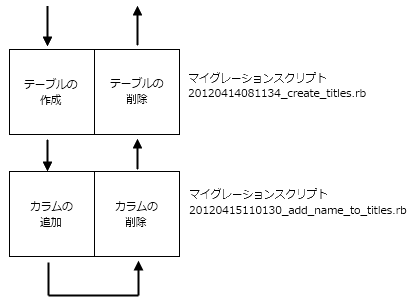
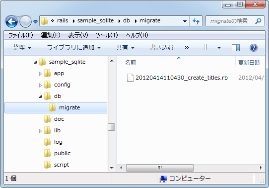

マイグレーション機能とは
Railsではマイグレーションと呼ばれる機能を使いテーブルを新規に作成したりカラムやインデックスの追加といった変更を行ないます。ここではまずマイグレーションとはどういうものなのかについて解説し、使用可能なメソッドの一覧をご紹介します。
1.Railsにおけるマイグレーションとは
2.up、down、changeメソッド
3.マイグレーション用メソッド
Railsにおけるマイグレーションとは
まずはマイグレーションとは何なのかについて簡単にご説明します。
通常テーブルを新規に作成するには必要なSQL文を直接実行して作成します。カラムを追加したりする場合も同じです。それに対してマイグレーションを使う場合はテーブルを新規に作成するためのマイグレーションスクリプトと呼ばれるスクリプトファイルを作成し実行します。後からカラムを追加したい場合には、カラムを追加するための別のスクリプトファイルを作成し実行します。
スクリプトファイルはRailsで決められた文法で記述するのですが、使用しているデータベースがMySQLであってもSQLiteであっても同じ記述が対応できます。またスクリプトファイルは作成された順に残っていますので、最初のものから順に実行することでまったく同じテーブルを簡単に作成できます。
SQL文を使う場合(MySQL)：
create table sampledb.personal(name varchar(20));
マイグレーションスクリプトの場合：
class CreatePersonals < ActiveRecord::Migration
def change
create_table :titles do |t|
t.string :name
end
end
end
さらにスクリプトファイルには、そのスクリプトで実行する処理と逆の処理を行なうスクリプトを合わせて記述しておくことになっています。その為、そのスクリプトによって変更された処理はあとから同じスクリプトファイルを使って元に戻すことができます。

マイグレーションという機能は一見すると面倒に見えますが、この機能を使うことで特定のデータベースの文法に依存せずにテーブルへ行なう操作を記述でき、変更を実施したり元に戻すといった作業が簡単に行なえるようになります。
up、down、changeメソッド
それではマイグレーション機能を使ってテーブルを作成してみたいと思います。マイグレーションスクリプトは変更があるたびに新規に作成できるのですが、最初の1個であるテーブルの作成に関するものについては「モデルの作成とRailsで指定可能なデータ型」でご紹介した通りモデルを作成する時に自動的に作成されます。
作成されたファイルは「db/migrate」ディレクトリ内に保存されます。

マイグレーションスクリプトのファイル名は「20120414110430_create_titles.rb」のように作成された時の「年月日時分秒日付」が頭に付いたファイル名となっています。複数のマイグレーションスクリプトを作成した場合も、ファイル名を見ればどのような順序で実行されたのか簡単に確認できます。
では改めてマイグレーションスクリプトファイルの中身を見てみます(SQLite用のサンプルで作った方です)。
class CreateTitles < ActiveRecord::Migration
def change
create_table :titles do |t|
t.timestamps
end
end
end
ActiveRecord::Migrationを継承したクラスが定義されています。クラス名は「CreateTitles」となっていますが、クラス名の付け方はまたあとでご説明します。
クラスに含まれるメソッドは通常次のどちらかとなります。まず1つ目の構成です。
class クラス名 < ActiveRecord::Migration
def up
...
end
def down
...
end
end
このページの最初のほうで記載したとおり、マイグレーションスクリプトにはカラムを追加する記述を行なった場合は、その反対となる記述も合わせて行います。そこでupメソッドの方にカラムを追加するメソッドを呼び出したら、downメソッドの方でカラムを削除するメソッドを呼び出します。
class AddNameToTitles < ActiveRecord::Migration
def up
add_column :title, :name, :string
end
def down
remove_column :title, :name
end
end
もう一つは次のような構成です。
class クラス名 < ActiveRecord::Migration
def change
...
end
end
先程の例のように、upメソッドで「add_xxx」文を実行しdownメソッドで「remove_xxx」文を実行しているような場合は、まとめてchangeメソッドを使って次のように記述できます。
class AddNameToTitles < ActiveRecord::Migration
def change
add_column :title, :name, :string
end
end
テーブルを作成するための「create_table」を使う場合もchangeメソッドを使って記述します。自動で作成されたマイグレーションスクリプトはこの構成となっています。
class CreateTitles < ActiveRecord::Migration
def change
create_table :titles do |t|
t.timestamps
end
end
end
マイグレーション用メソッド
テーブルに変更を加えるにはupメソッドやdownメソッドの中でマイグレーション用に用意されたメソッドを呼び出します。例えばカラムを追加したい場合は add_column メソッドを使います。ここではどのようなマイグレーションメソッドがあるのか一覧でご紹介します。
add_column(table_name, column_name, type, options = {})
add_index(table_name, column_name, options = {})
add_timestamps(table_name)
change_column(table_name, column_name, type, options = {})
change_column_default(table_name, column_name, default)
change_table(table_name, options = {})
create_table(table_name, options = {})
drop_table(table_name, options = {})
remove_column(table_name, *column_names)
remove_index(table_name, options = {})
remove_timestamps(table_name)
rename_column(table_name, column_name, new_column_name)
rename_index(table_name, old_name, new_name)
rename_table(table_name, new_name)
大きくわけて「add_xxx」「change_xxx」「remove_xxx」「rename_xxx」の4つに分かれています。(create_tableとdrop_tableは別です)。今までに記述したサンプルでも次のようにマイグレーション用メソッドを呼び出していました。
class AddNameToTitles < ActiveRecord::Migration
def up
add_column :title, :name, :string
end
def down
remove_column :title, :name
end
end
addd_columnメソッドの場合はテーブル名、追加するカラム名、カラムのデータ型の3つの引数を指定して呼び出しています。remove_columnメソッドの場合はテーブル名と削除するカラム名の2つの引数を指定して呼び出しています。
マイグレーションスクリプトに関する解説は以上となります。次のページではマイグレーションスクリプトを使って実際にテーブルを作成してみます。
( Written by Tatsuo Ikura )

著者 / TATSUO IKURA
初心者～中級者の方を対象としたプログラミング方法や開発環境の構築の解説を行うサイトの運営を行っています。